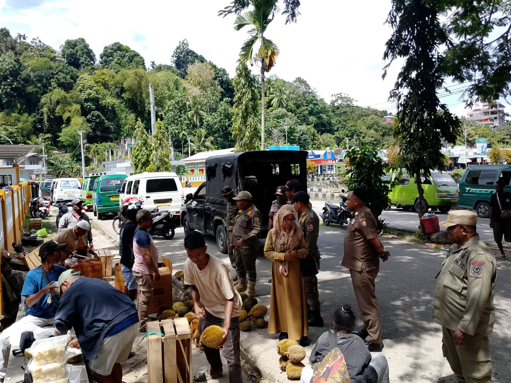

SIBISTER
SATUAN POLISI PAMONG PRAJA
KABUPATEN FAKFAK
Sistem Informasi Bisa Tertib • Menegakkan Perda, Mewujudkan Ketertiban Umum
Beranda
Profil
Profil Instansi
Dokumentasi Before-After
Data Personel
Galeri Dokumentasi
Operasional
Penegakan Perda
Patroli
Tibumtranmas & Peta
Satlinmas
PPNS
Layanan
Pusat Layanan
Pengaduan Masyarakat
Informasi Layanan
Kontak Layanan
Transparansi
Kinerja & Anggaran
Berita & Kegiatan
Damkar
Beranda
Berita & Informasi
Detail Berita
Berita
Memuat berita...
-
Admin Satpol PP
Kabupaten Fakfak
